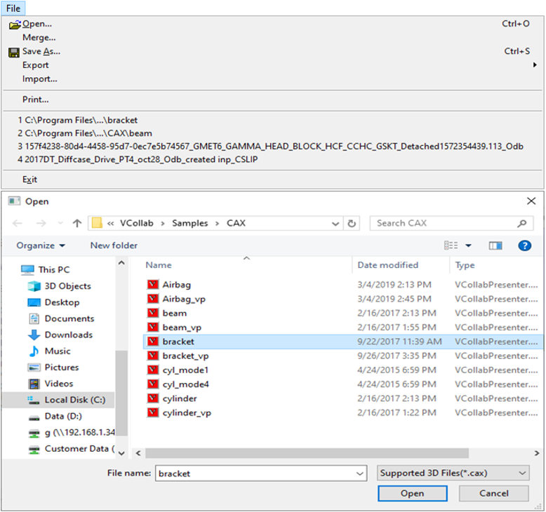
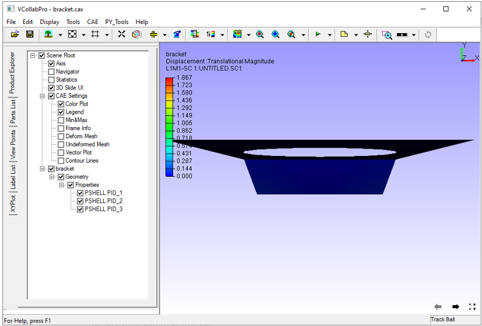

Loading CAX File
The command File | Open allows to load a CAX file in VCollab Pro.
Steps for loading a CAX file
Click File | Open, which opens up the file open dialog box.
Browse and Select a CAX file. Click Open.

On loading, the CAX model appears as shown below

Note
The file is loaded with following defaults,
- First CAE result if it is a CAX model
- First user defined viewpoint if CAX model contains viewpoints.
- Otherwise loads according to profile.